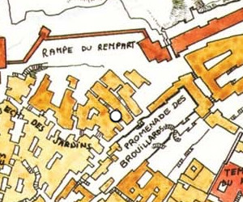

Guilde des alchimistes
Gobelin d'or 2016.
Situées entre l'échelle des jardins et la rampe du rempart, tout près de la porte des Mages, les maisons des différents alchimistes de la ville forment un ensemble compact et assez chaotique particulièrement original dans ce quartier huppé de la strate de la Blanche Chaussée, sur la terrasse du Nuage. Les longues cheminées d'où s'échappent des fumées multicolores révèlent immédiatement l'usage de ces bâtiments. Au rez-de-chaussée, les échoppes donnent pour la plupart sur la promenade des brouillards ou à défaut dans de petites venelles latérales. Au centre du complexe, un édifice plus cossu abrite le siège de la guilde en elle-même. Un vaste salon fort luxueux permet d'y recevoir les clients et fournisseurs les plus fortunés pour y négocier d'importants contrats autour d'un thé ou d'un vin aux origines lointaines. Au-dessus des échoppes se trouvent les bureaux et les habitations des alchimistes et de leurs familles, les laboratoires eux se trouvent généralement en retrait de la promenade au-dessus de hangars où sont installées de petites verreries artisanales.
Le travail d'alchimiste nécessite de se fournir en produits rares et exotiques en provenance de toutes les parties du monde connu. Ce sont les dirigeants de la guilde, dont les bureaux sont localisés au-dessus du grand salon, qui mènent les négociations avec les grands marchands de la ville pour acheter ces produits rares et ensuite les répartir entre les alchimistes. Cette dernière tâche, d'une importance capitale, est la raison pour laquelle les sièges héréditaires du conseil de la guilde se négocient entre cent et deux cents mille pièces d'or. À l'autre bout de l'échelle sociale de la guilde on trouve les enfants coursiers qui forment un maillon essentiel de la guilde ; les potions les plus vendues par la guilde étant les potions de guérison ou de soins, la plupart des clients ne sont pas en état de venir chercher leurs préparations et se les font donc livrer. Ces jeunes coursiers proviennent généralement des quartiers pauvres et doivent payer une redevance pour être autorisés à transporter les potions. En contre partie, ils élisent chaque année un représentant au conseil de la guilde.
La guilde ne se limite pas à la surface, les sous sols accueillent un certain nombre de laboratoires et de lieux de stockage pour les matières les plus sensibles. En particulier, la grande salle des coffres sous le salon d'honneur de la guilde est hautement sécurisée et deux golems de fer y patrouillent jour et nuit. Cette grande salle voûtée, toujours parcourue par un courant d'air dispersant les émanations toxiques ou corrosives, abrite le long de ses murs les coffres de la guilde et des alchimistes les plus fortunés. On dit que cette salle est protégée contre tous types d'intrusion magique. Les trésors qui y sont stockés sont l'objet de nombreux bruits et fantasmes en ville, mais la réalité les surpasse tant on peut y trouver de potions légendaires dont la puissance n'est égalée que par leur prix. Les alchimistes y stockent aussi les matériaux les plus rares utilisés pour la fabrication de ces mêmes potions. Si l'on en croit les rumeurs, cela inclurait du sang de dragons anciens, des plumes de solaires ou de la poudre d'os de liches... Un tel lieu pourrait légitimement attirer les convoitises et certains bruits dans les bas fonds indiqueraient que la guilde des alchimistes en a négocié l'immunité avec les guildes de voleurs. L'accord stipulerait que les guildes de voleurs punissent de mort toutes tentatives ou même projet de cambriolage du lieu, en échange de quoi les alchimistes fourniraient régulièrement des poisons rares à ces guildes. Un échange de bons procédés moralement discutable dont les instances dirigeantes de la guilde ont toujours nié l'existence.
Quelques membres du conseil
Tiberius Hondar
Tiberius Hondar est l'un des producteurs de potions de guérison les plus réputés du royaume des Deux lacs. En particulier les préparations de régénérations de ce halfelin robuste complètement myope originaire de la cité ont permis à plusieurs de ses riches clients de retrouver un doigt, un nez, voire parfois même une jambe entière. Ce miracle a néanmoins un coût : plusieurs milliers de pièces d'or par traitement, lesquels s'étalent sur plusieurs semaines.
Krassia Eldark est une alchimiste atypique, car la spécialité de sa famille depuis de nombreuses générations est la fabrication de golems. Lorsque vous verrez l'un de ces petits golems de bois faire le service dans un hôtel particulier, sachez qu'elle en est l'unique fabriquante et que ces petits bijoux valent des milliers de pièces d'or. La construction de golems de guerre, tels ceux de la salle aux trésors de la guilde, est néanmoins une toute autre affaire. Ceux-ci ne sont disponibles que sur commande plusieurs mois à l'avance et selon la disponibilité de matériaux de construction rares. Enfin, il vous faudra aussi débourser plusieurs dizaines de milliers de pièces d'or... Vous comprenez à présent pourquoi ils ne courent pas les rues.
Kaseo Hartar
Kaeso Hartar est le spécialiste incontesté des poisons et potions aux objectifs les plus discutables. Le rôle de cet humain longiligne de près de deux mètres dans la fourniture des guildes d'assassins en fait un membre incontournable de la guilde. Il est néanmoins très discret et son laboratoire est probablement la pièce la plus profonde du complexe de la guilde des alchimistes. Sa spécialité est un poison à base de sang de diantrefosse qui enverrait sa victime directement aux enfers pour une éternité de supplices...
Aquila Primus est l'actuel Grand alchimiste et maître de l'ordre. Habitant de la Haute Terrasse, la famille de ce vieil homme de 79 ans détient depuis des siècles les recettes les plus complexes et les secrets les plus protégés qui permettent d'extraire l'essence des produits les plus rares. Les potions de sa fabrication sont d'une puissance incomparable et on vient de très loin pour lui acheter ses produits. La rareté de sa production lui laisse tout le temps nécessaire pour s'occuper de la gestion de la guilde et rencontrer ses partenaires commerciaux.
La guilde dans votre campagne
Vos aventuriers peuvent se rendre à la guilde pour différentes raisons. La plus commune est pour l'achat de potions. Dans ce cas, la taille et l'opulence de la boutique à laquelle ils s'adresseront dépend de la valeur des potions qu'ils achètent. Les membres du conseil de la guilde reçoivent généralement leurs clients réguliers dans le salon d'honneur. Il est aussi possible de revendre un certain nombre de minerais ou d'organes de créatures à la guilde. Néanmoins, un jet d'Intelligence (Arcanes) DD 15 est nécessaire pour savoir quelles sont les parties intéressantes d'un monstre (s'il y en a) et un jet d'Intelligence (Nature) DD 15 permet de les recueillir sans les altérer. Les alchimistes sont ouverts au troc et sont toujours à la recherche de matières premières. En cas de pénuries il peut même arriver qu'ils passent des commandes directement aux aventuriers de passage. Il est aussi possible que des aventuriers soient envoyés pour enquêter sur certaines activités de la guilde. En particulier, il existe des rumeurs indiquant que Krassia utiliserait des âmes humaines pour la construction de ses golems. Évidemment, toute enquête sur un empoisonnement mènera à Kaeso, qui peut en tant qu'expert aider à trouver la nature d'un poison contre menu payement. Il ne donnera néanmoins jamais d'indication sur ses clients et ne garde d'ailleurs aucune note à leur sujet. On pourra seulement trouver des indications sur ses ventes récentes dans ses livres de comptes, mais il ne partagera jamais ces informations volontairement.
Listes
Potions et tarifs
- Potion de guérison - 50 po
- Potion de poison - 100 po
- Élixir de santé - 125 po
- Potion de guérison majeure - 150 po
- Potion de souffle de feu - 150 po
- Poudre de régénération - 150 po
- Potion d'amitié avec les animaux - 200 po
- Potion d'escalade - 200 po
- Potion d'héroïsme - 200 po
- Potion d'invisibilité - 200 po
- Potion de lecture des pensées - 200 po
- Potion de respiration aquatique - 200 po
- Potion de rétrécissement - 250 po
- Potion d'agrandissement - 250 po
- Potion de forme gazeuse - 300 po
- Potion de résistance - 300 po
- Potion de vitesse - 400 po
- Potion de force de géant des collines - 400 po
- Huile d'insaisissabilité - 450 po
- Potion de guérison supérieure - 450 po
- Philtre d'amour - 500 po
- Potion de vol - 500 po
- Potion de clairvoyance - 1000 po
- Potion de force de géant du givre - 1000 po
- Potion de vitalité - 1000 po
- Potion de guérison suprême - 1350 po
- Potion de force de géant du feu - 1600 po
- Huile éthérée * - 2000 po
- Potion de souffle draconique * - 2500 po
- Huile d’affûtage * - 3000 po
- Potion de force de géant des nuages * - 3000 po
- Potion d'immunité * - 3000 po
- Potion d'invulnérabilité * - 4000 po
- Potion de force de géant des tempêtes * - 5000 po
- Poison des enfers ** - 6000 po
- Potion de guérison complète * - 7000 po
- Potion de longévité * - 9000 po
* potions disponibles uniquement chez Aquila Primus
** vendu uniquement par Kaeso Hartar
Golems disponibles chez Krassia Eldark
- Armure animée (FP 1) - 8 000 po
- Golem de bois (FP 2) - 15 000 po
- Golem de chair (FP 5) - 50 000 po (proposé uniquement aux clients de confiance)
- Gardien animé (FP 7) - 80 000 po
- Golem d'argile (FP 9) - 125 000 po
- Golem de pierre (FP 10) - 150 000 po
- Golem de bronze (FP 13) - 250 000 po
- Golem de fer (FP 16) - 400 000 po
Nouvelles potions
Poudre de régénération
L'application de la poudre deux fois par jour durant plusieurs semaines permet de faire repousser un membre perdu. Un traitement unique peut faire disparaître une petite cicatrice, une semaine permet de retrouver quelques phalanges, et trois mois une jambe coupée juste sous le bassin. Durant la période de repousse le sujet est la victime de violentes douleurs.
Potion de souffle draconique
Après avoir bu cette potion, vous pouvez utiliser une action bonus pour expirer un souffle digne d'un dragon. Toutes les créatures situées dans un cône de 9 mètres doivent réussir un jet de sauvegarde DD 17 sans quoi chacune d'elles subit 10d6 dégâts. En cas de réussite, les dégâts sont réduits de moitié. Le souffle contourne les coins et affecte les objets qui ne sont pas portés ou transportés. L'effet se termine après avoir utilisé ce souffle trois fois ou après une heure. La potion peut être préparée pour différents types de dégâts et de jet de sauvegarde :
| Type | Dégâts | Jet de sauvegarde |
| Blanc | Froid | Constitution |
| Bleu | Foudre | Dextérité |
| Noir | Acide | Dextérité |
| Rouge | Feu | Dextérité |
| Vert | Poison | Constitution |
Potion d'immunité
Lorsque vous buvez cette potion, vous gagnez une immunité à un type de dégâts pendant 1 heure. Le MD choisit le type ou le détermine au hasard parmi les options ci-dessous.
| d10 | Type de dégâts |
| 1 | Acide |
| 2 | Froid |
| 3 | Feu |
| 4 | Force |
| 5 | Foudre |
| 6 | Nécrotique |
| 7 | Poison |
| 8 | Psychique |
| 9 | Radiant |
| 10 | Tonnerre |
Poison des enfers
Poison à appliquer sur une arme tranchante ou perforante. Le poison agit lors de la prochaine attaque réussie ou perd son pouvoir après une minute. La victime doit effectuer un jet de sauvegarde de Constitution DD 20, subissant 10d10 de dégâts de poison en cas d'échec, ou la moitié de ces dégâts en cas de réussite. Si la cible est tuée par le poison, son âme est directement transportée aux enfers sous la forme d'un lémure.
Potion de guérison complète
Lorsque vous buvez cette potion vous regagnez tous vos points de vie. Les potions de guérison n'ont néanmoins plus d'effet sur vous durant les prochaines 48 heures.
Écrit par Tirion (Gobelin d'or 2016)